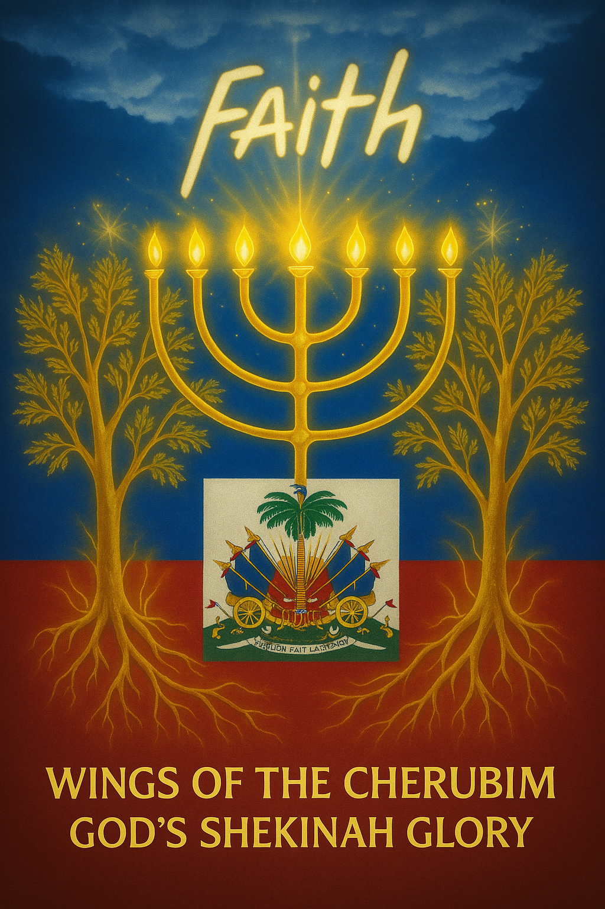

Exploring the deep spiritual significance of the Haitian flag and its connection to biblical prophecy.

The Haitian Flag in the Bible
The Haitian flag:in the Bible
The Haitian Flag in The Bible
The line by line wording of Zecariah chpt. 4 connecting into Revelation chpt. 11 vs 3.4.5, is unvieled.
These line by line words are brought to life as they are married into the 4 square inset of today's Haitian flag.
The tapestry of light is revealed.
The Kingdom of God coming to the earth is visually seen, along with the firey judgement throne of God.
The colors of purple and scarlet, the meeting of God and man have birthed the millennial Kingdom of God on earth.
Zechariah chapter 4
"and the Angel who talked with me came back and walked with me, as a man is wakened out of his sleep. 2:and he said to me, What do you see? And I said, I have looked, and behold a candlestick all of gold, with a bowl on the top of it, and seven lamps on it, and seven mouths to the seven lamps which are on the top of it.
3: And Two Olive Trees by it, one on the right side of the bowl and the other on it's left side.
4: So I answered and spoke to the Angel who talked with me, saying, what are these my Lord?
5: Then the Angel who talked with me answered and said to me, Do you not know what these are? And I said, No, my Lord, I do not know.
6: Then he said to me, This is The Word of The Lord To Zerubbabel, saying, not by power nor by might, but by my spirit, says The Lord of hosts.
7: Who are you, O great Mountain? Before Zerubbabel you shall become like a plain; and He shall bring forth the headstone of equity and of mercy.
8: Moreover, The Word of the Lord came to me saying,
9: The hands of Zerubbabel have laid the foundations of this house; His hands shall also finish it; and you shall know the the Lord of Hosts has sent me to you. The Bible: The Haitian Flag
Zechariah chapter 4
10: For who has despised the day of small things? For they shall look and see The Plummet in the hands of Zerubbabel. These are The Seven Eyes of The Lord, which look over the whole earth.
11: Then I answered and said to him, What are these Two Olive Trees on the right side of the candlestick and on it's left side?
12: And I answered the second time and said to him, What are these Two Olive Branches which are beside the Two Golden Pipes which pour the Golden Oil out of themselves?
13: And he said to me, Do you not know what these are? And I said, no my Lord.
14: Then said he, These are The Two Annointed Ones who stand by the Lord of the whole earth."
Haitian Flag in the Bible
Revelation chapter 11
V-3 "Then I will give power to my Two Witnesses, and they shall prophesy a thousand and two hundred and three score days, clothed in sack cloth.
4: These are The Two Olive Trees and the Two Candlesticks standing before the Lord of the earth.
5: And if any man desires to harm them, fire will consume their enemies; and if any man desires to harm them, he must in this manner be killed." The Haitian Flag in the Bible
Zechariah Chpt. 4:518 BC
V.2; "Candlestick of all gold, with a bowl on top of it, and seven lamps on it and seven mouths to the seven lamps which are on top of it.
Candlestick of all gold
The symbol of the nation of Israel is the seven lamp stand of gold called the Menorah (lamp stand). The pattern of which was given to Moses by God on Mount Sinai.
Exodus 25v31-32.
The seven branches with light on top also represent the seven spirits of God found in Revelation Chpt.3v1:4v5:5v6.
This lamp stand is also seen as the seven colors of the rainbow.
When the seven colors are merged they become light.
The golden palm tree in the four square center of the flag of the nation of Haiti is set between three golden flag poles on the right and on the left. These are spiritually the scepters of the seven spirits of God.
The center golden palm tree is the center gold candlestick of the symbol of Israel, the Menorah. The Jewish people named this center gold candlestik, the shamash. They referred to this as a symbol of God. We see that the golden palm tree in the Haitian flag has a light blue jacket under the twelve palm leaves with a liberty cap On top. It is desending and splitting a demon head. It can be seen as our high priest.
Milchisedec, Hebrews chpt. 5 and chpt. 6.
The Haitian Flag in the Bible
V.2, continued
"candlestick of all gold, with a bowl on top of it"
The 12 palm leaves in a turned down position represent the bowl. me 7 lamps are the six triangle gold lamps at the end of each flag pole. The 7th is the center palm tree itself. The flag poles are gold as are the 7 triangles. Gold is a reference to heaven.
The 7 mouths are the 7 rectangles below the 7 triangles. The symbol for mouth in China is a rectangle, as such. The 7th is the palm tree itself. The Haitian Flag in the Bible
Zechariah chpt. 4
v.3; "and two olive trees by it, one on the right side of the bowl and the other on it's left side."
The two olive trees are represented by the two sets of wooden wagon wheels with eight spokes each.
One set of wheels as a wheel within a wheel is on the right of the golden palm tree. The other is on the left side of the golden palm tree. Also the number 8 in Hebrew is the symbol for eternity.
v.4; "So I answered and spoke to the angel who talked with me saying, what are these, my Lord?
v.5; Then the angel who talked with me answered and said to me, do you not know what these are? And I said, no my Lord, I do not know.
v.6; Then he said to me, this is the word of the Lord to Zerubbabel saying, "Not by power nor by might, but by my spirit, says the Lord of Hosts." Adonai Tza va öut - Hebrew
The prophet is confused and asks what are these? The angel, in his answer, takes the five material things and brings them into a declaration. This is a declaration for the nation of Haiti. It is a spiritual banner sealed above the Haitian flag. The angel has opened a revelation in the flag itself which which is the word of God for the nation of Haiti.
The solid images located in the four square inset of the Haitian flag become the motto of Haiti set as a spiritual banner over the nation of Haiti.
The rectangle, again is the Chinese symbol for mouth. Zerubbable (out of Babylon) is a code name for Jesus. In this we see the physical married into the spiritual.
v.7:
"Who are you, o great mountain?
Before Zerubbabel you shall become like a plain; and He shall bring forth the headstone of equity and mercy."
v.8:
"Moreover, the word of the Lord came to me saying."
v.9:
"The hands of Zerubbabel have laid the foundations of this house; His hands shall also finish it."
v.10:
"For who has despised the day of small things?
For they shall look and see the plummet in the hands of Zerubbabel. These are the seven eyes of the Lord which over the whole earth.
These four verses are detached from Section 1.
This is a final judgement scene, as in Psalm 62v1 -4.
Here God stands in as a defense counsel for mankind and as a judge pronounces judgement upon Satan.
This qualifies the creation of hell in Psalm 2.v5
In these four verses a final judgement is pronounced. The plummet line is God's perfect righteouness.
The building and finishing of the foundation of this house must be in reference to the nation of Haiti. For it is placed in the center of the connection to and explanation of the Haitian flag.
Finally the small nation of Haiti is as small things, and yet referred to as the building of a house, a nation.
Section 3: vs 11-14
This 3rd Section is Spirit
Now the prophet answers again with a question.
v 11: "Then I answered and said to him what are these two olive trees on the right side of the candlestick and on it's left side?"
v 12: "And I answered the second time and said to him what are these two olive branches which are beside the two golden pipes which pour the golden oil out of themselves?"
v 13 "And he said to me, do you not know what these are? And I said, no my Lord."
v 14: "then he said, these are the two annointed ones who stand by the Lord of the whole earth."
This 3rd Section is Spirit as items begin to change. A transition is taking place. The olive trees have become two olive branches. The wooden spokes in the wheels are the olive branches where they are also beside the golden palm tree. They are now beside the two golden pipes. The golden pipes are the golden cannons. The golden oil is the word of God from heaven. These word changes are to connect the golden cannon to the golden pipes to the annointed ones. Also, the 1st name of Jesus was the Nazarene which means branch.
The light blue powder horns are under the two gold cannons which are now golden pipes. Light blue is in reference to the sky; heaven.
A transition has taken place and we are moved in time from 518 BC to 90 AD. The words of two annointed ones become two witnesses. The two olive trees remain for direct connection identification to Revelation.
The two pipes become the two candlesticks: Rev. 11v.3-4-5.
The Haitian Flag in the Bible
vs 11-14:
The golden oil is produced by the two light blue powder horns under the two golden cannons (pipes).
Light blue is the color of the sky. This is a reference to the word of God. There is a multiple color scheme that is foundational in the flag. It is medium blue as in light purple over scarlet red.
The coding revelation is that light blue is heaven, red or scarlet is the earth. This red is also the basis for Adam, Edom and Esau. When the light blue is blended with or meets the red, a color purple is formed.
It represents the meeting of God and man. This color blend of blue-purple-scarlet is found in Exodus 25 through Exodus 31 and summarized in Exodus 39, nine times. In the New Testament it is seen in the robes put upon Jesus in Judgement. Matthew 27v28 states a scarlet robe: John 19v2 - a purple robe.
Matthew and Luke have the same color code of purple and scarlet.
The entire flag of the Nation of Haiti is purple and scarlet.
The meeting of God and man.
The color symbol of purple over scarlet is the meeting of God and man. Jesus the God man, Son of man.
Final; thetwo golden pipes are then the two annointed ones who stand by the Lord of the whole earth.
In Exodus 25 through 39 the color gold represents heaven as does light blue. The fine twine linen is the righteousness of the Saints. Garments of white only made possible by the meeting of God and man.
Salvation is possible only through the resurrection power of the scarlet blood of the lamb. Spiritual washing of the blood, following Holy Spirit repentance, cleanses man's self righteousness and his sin.
A door to heaven and eternal life with God is possible. Also, a fine twine linen is the material of which flags are made of.
The Haitian Flag in the Bible
Revelation: 90 AD
Chapter 11 v. 3-4-5
11v3: "Then I will give power to my two witnesses and they shall prophesy a thousand and two hundred and three score days, clothed in sack cloth."
4: These are the two olive trees and the two candlesticks standing before the Lord of the earth.
5: And if any man desires to harm them, Fire will consume their enemies; and if any man desires to harm, he must in this manner be killed."
Here God's word has made a spiritual, supernatural connection outside of time. In the center of the flag, we see a golden palm tree descending and splitting a demon head.
A spiritual door has been opened, the demon head has been split. The door in the spirit realm was opened by the force of praise. The curse is removed from the earth.
In verse 3, the language of V 14 of Zechariah chpt. 4 is connected.
The two annointed ones in verse 14 have become God's two witnesses in Rev. 11 v 3. They are clearly identified in the same language of Zechariah chpt. 4. These are the two olive trees.
The golden cannon whch are the two golden pipes now connect to the candlestick. The candlestick becomes two. They are married into the two witnesses who thru which come forth fire as fire by which fire comes out from the cannons.
The Haitian Flag in the Bible
In Revelation 11v4, the two olive trees and the two candlesticks = the two golden pipes = the two annointed ones = the two witnesses, (Jesus - Holy Spirit).
The golden palm tree is the - LORD OF THE EARTH.
THE LORD OF THE EARTH IS THE GOLDEN PALM TREE.
The golden palm tree is also - Melchizedek.
The two annointed ones; (the two witnesses) will prophecy for 42 months, 3 1/2 years while the anti Christ is on the throne.
This is simultaneous to the 144,000 who are the Orthodox Jews who have been commissioned as witnesses in Isaiah chpt.43v10-15. These are going throughout the world as evangelists. See Revelation chpt. 7 vs 9-14.
This connection into the book of Revelation is a connection to the last days and the removal of the curse from the earth.
All is pictured as a multi demension, timeless revelation. Here Jesus and the Holy Spirit are seen as the face of God throughout the flag.
All this is a result of the reformatting of the United Military, (U.S. Army) Seal of 1775. This is a vision seen as a result of the power of the Holy Spirit. God has moved outside of man's ability to understand. If the Haitians had not fought in and made George Washington's victory possible in our revolution, the reformatting of the addition of the four square flag inset by Cathern Flon from the U.S. Miltary seal would have not taken place.
A monument in the city of Savanah Georgia can be seen through Google.
This monument is a tribute to the Haitians who fought and died for our nation's independence.
Introduction:Vision and Revelation
Haiti, a small yet powerful nation, is often symbolized through its flag. This flag contains significant spiritual meaning, deeply rooted in biblical prophecy and divine connection. In this section, we explore the connection of Haiti's flag to the Bible, and how its elements align with spiritual concepts of God's plan for humanity.
Zechariah 4:5–6 describes a spiritual revelation given to Zerubbabel. The angel shows him five material things and explains their symbolic meaning. This is presented as a declaration for the nation of Haiti.
The angel reveals a spiritual banner sealed above the Haitian flag, symbolizing the Word of God for Haiti. The four square insets in the flag are explained as spiritual emblems.
Zechariah 4:6 - "Not by power nor by might, but by my Spirit, says the Lord of Hosts."
Each image in the flag is interpreted, including references to Zerubbabel (a type of Jesus) and the mountain becoming a plain (v.7), indicating God's mercy and divine help.
Section II: God's Judgement Declaration and Foundation
A spiritual confrontation occurs as God judges Satan using the plummet of His righteousness—symbolized by the 7 spirits/eyes of the Lord. These correspond to the golden triangles on the Haitian flag. God lays the foundation of Haiti, and the nation's destiny is sealed by His will.
This section interprets Zechariah 4:8–10, emphasizing that the foundation laid by Zerubbabel signifies the righteousness of God. This is linked to Haiti's spiritual foundation.
Psalm 62:1–4 - God stands as a defense, judging Satan and establishing righteousness.
Section II: Judgement Declaration
A spiritual confrontation occurs as God judges Satan using the plummet of His righteousness—symbolized by the 7 spirits/eyes of the Lord. These correspond to the golden triangles on the Haitian flag. God lays the foundation of Haiti, and the nation's destiny is sealed by His will.
Biblical Connections:The Olive Trees and the Candlestick
The Haitian flag's meaning is closely linked to biblical scripture, especially Zechariah 4:11-14 and Revelation 11:3-5. In these verses, the two anointed ones are identified as witnesses who prophesy the word of God, symbolized through the golden pipes and candlesticks. These elements are reflected in the Haitian flag, which contains symbolic representations of God and man meeting.
Zechariah 4:11-14 speaks of two olive trees and branches, which are later identified as the two witnesses of Revelation. This spiritual connection draws upon the meeting of heaven (represented by light blue) and earth (represented by red or scarlet), which is symbolized in the Haitian flag through the blend of these colors.
Zechariah 4:11–14 discusses two olive trees and golden pipes. These are described as two anointed ones standing before the Lord.
The olive trees are said to become witnesses and are interpreted as connections to Jesus and God's word. This transition signifies Spirit in motion.
Color Symbolism in the Haitian Flag
The Haitian flag features a rich color scheme that includes light blue (heaven), scarlet (earth), and gold (heavenly glory). These colors are connected to the meeting of God and man. Light blue, as seen in the biblical connection, represents the sky or heaven, while scarlet is tied to Adam, Edom, and Esau. The combination of these colors creates a purple hue, symbolizing the union of divine and human elements.
The flag’s golden palm tree is a central figure that represents the Lord of the Earth, with a dual connection to both Melchizedek and the golden anointed ones in the Bible. The palm tree's spiritual significance speaks to the divine authority of God over the earth.
The flag is described as having light blue, purple, and scarlet, which symbolize heaven, earth, and the meeting of God and man. These are linked to Exodus and the garments of Jesus in Matthew and John.
John 19:2 - "They put on him a purple robe."
Spiritual Meaning and Salvation
The Haitian flag, through its colors and symbols, reflects God's covenant with humanity. The golden pipes, the two anointed ones, and the fire they bring are symbols of divine prophecy and power, as seen in Revelation 11. The curse on the earth is removed, and the divine authority over all nations is established. The flag represents the spiritual journey of salvation and the meeting of God and man.
In essence, the Haitian flag is not only a national symbol but a spiritual declaration, connecting the past, present, and future through biblical prophecy and the resurrection power of Jesus Christ.
The section concludes with references to Revelation 11:3–5 and the symbolism of spiritual warfare, purification, and God's two witnesses.
Revelation 11:3 - "I will give power to my two witnesses..."
Section III: Transformation & Time Shift
The olive trees become branches, forming wheel-within-wheel visions (linked to Ezekiel 1). The Haitian flag’s inset carries prophetic symbols—golden cannons, palm tree, double-edged axes—interpreted as God's throne and judgement imagery.
Prophetic Fulfillment & Revelation
The two golden pipes (Jesus and the Holy Spirit) are the two anointed ones, seen again in Revelation 11. The Haitian flag becomes a prophetic symbol of Christ’s return and God’s final judgement. The nation’s past covenant with voodoo expired in 2004. God’s justice followed—confirmed by the 2010 earthquake and more.
Creation, Sound, and the Word
From God’s love came vibration, sound, and the word—leading to creation. Psalm 148 and 29 reflect this. Jesus, God's visible image, spoke, and creation responded. Hebrews 4:12 captures the divine power that divides soul and spirit through the word.
CREATION
CREATION
1st command of God; Gen1-3; "Let There be Light":" and There was Light,
For This command of creation To be executed, Words from sound had to be in place by God; Sound forms words. Sound is a result of vibration.
God is Love. The heart of God is an oil of annointing of love which is beyond our experience.
This power force of love is The driving spititual engine which brought forth vibration and The formation of Sound. Through God's will a power went forth Through Love To Vibration and The formation of elements. From elements to the bringing forth of sound waves. From These sound waves, syllables are formed. To make words. Creation Took place. God created a spiritual atmosphere of Time and The words seen in Psalm 148 came forth.
V. 5-6 "He spoke and They were made, He Commanded and They were created. He has also established Them forever and ever; He has made a decree which shall not pass. "This 3 part statement reflects The manifestation of the 3 part fullness of God, body - Soul - spirit.
The 1st word for God in The bible in hebrew is ELOHIM.
, imdenotes a plurality of a singular God. Im when attached makes The word plural. So we have Elohim Tz va out, The creator God of Hosts.
The activation of Psalm 148 is a result of Praise from The existance of His creation and His angels,
This Praise is culminated To Completion in Psalms 150. The last-5 psalms are known as The Praise psalms.
There is a duplication of
Psalm 148 in Psalm 29.
Here God's physical manifestation, Jesus is speaking out and it is also in a Three part fullness Jesus;
-God's visible image - CoL. 1 versus 15: "
"Here is The image of The invisible God." Hebrews 1 verse 3 - His son-"For He is The brighTness of His glory and The express image of His being."
Here is God's visable" image Jesus is in His cursed earth with The father's annointing of power of creation,
Psalm 29, V 3-4; "The void of The Lord is of The Lord upon The waters, The God of Glory Thunders; The Lord is upon many waters."
Psalm 29 is inteference To Jesus. He was baptized
and empowered as He came out of The water.
He defeated Satan by the word, and came To The Sea of Galilee and spok 2 words To 2 men," Follow me! Jesus being God's physical image in a cursed earth spoke Two words to 2 sets of 2men and separated Their souls from Their Spirits, (or The 1st Time from Creation and The fall/curse, The Spiritual eats of Their hearts could eat The word. Hebrews 4 v 12;
"For The word of God is Living and powerful and sharper Than any Two edge sword plereing even to The Point of division between soul and spirit and between The Joints and marrow and bones, and is a disernment of The Thoughts and intents of the heart.
-2 sets of 3
Neuclear
Neuclear
1. Isaiah, (760 BC): 17 v 1
"Damascus shall cease to be a city, and it Shall be a ruinous heap."
2.2.EzK 29, (595BC)
The nile will be picked UP- Egypt will be "desolate and waste", No foot of man shall pass Through IT" it shall not be inhabited for Forty years. (Time To cleanse The Land after neuclear explosion; Chpt 29- v 1-16.9
Support Scriptures : Isaiah 11V15.16.
Joel 3v 19-after start withh Kingdom
3. Amos, (787BC)
- remnant of Philistines - Perish 1. V 7-15. -Ashkelon - Gaza - Ekron-Ashdod
Note Joshua 13-Istall is to possess : V 3,
4.Zepaniah, (630bc)
: Son of Chusi - possibly a black prophet as also-Isaiah.
Gaza - Ashkelon: a dasolation +V1-7
verse 7 into millenium Kingdom. - no habitation - Sea Coast and erete; Ashdod - Ekron, (The ark had gone to Ekron-Isam.5 V 10,
5.. Zechariah, (520bc)
- Ashkelen: Ashdod -GAZA-Ekron - remnant of The Philistines (Palistinians) Shall Perish
6. Zechariah, (520 bc) 14 V 12 -
Plague (neuclear)
body: "Their flesh shall waste away while They Stand on Their feet."
Spirit: "Their eyes shall melt away in their sockets."
Soul: "Their Tongues shall consume away in Their mouths"
Note: Ekron:
2Kings 1 v 6: Baalzebub (Belzabub)
Was The God of Ekron.
1 sam 5 v10:Theark of God was
Taken To Ekroon.
The Brith of light
The Birth of Light
Truth facilitates a heart of resolve ,
To determine action
This
Action is The substance That births
clarity and righteousness
Confusion flees,
darkness is broken by Light
The sting of death is removed
The victory of The grave falls in defeat.
Yashua is The Truth. The way. The Life
Truth is The illumination of Light onto The darkness of The force of deception. Under The Light, The way of salvation's path of Life is clear..
Truth is revealed and The deception of darkness is immediately destroyed.
The birth of eternal Light is The salvation of a persons spirit and soul.
The Heart of God is Love, a dimension of Love That love is of matter in a Thickness unknown To man. In This end outside of Time, God moved This Love Thru vibration To The formation of The most minute elements. From This Came Sound, from sound as The sound of many waters came forth The command of The Creation of Light. God said. "Let there be light and There was The begining of The 1st day as set in scripture it is seen as The 1st command in Genesis 1. v 3, "and God said Let There be light;
and There was Light."
and in Psalm 148 v 5 + 6,
5. "For He spoke and they were made, He Commanded and they were created.
6. He also established Them forever and ever; He has made a decree which shall not pass."
The Birth of sight.
Truth is righteousness!
Truth facilitates a heart of resolve;
To determine action.
This action is The substance That births'
clarity and righteousness
Confusion flees
darkness is broken by light.
The Sting of death is removed.
The victory of of the grave falls in defeat.
God's creation becomes in oneness with His creation.
We are sealed in eternal Light.
Psalms 104: v 2; "Thou coverest Yourself with Light as with a garment, who stretches out heavens Like a curtain,"
THE CURSE
THE CURSE
God created all Things and iT was good; Gen. 1 - 31 : Psalms 104 : Rev.4.11
The selfrighteousness of man made a free will decision To have The knowledge of Good and Evil.
He wanted To be like God ; yet he was a creation and had no power To creaTe as a result of man's free will decision The creator God cursed The man who was deceived by The shining being -satan.all ThaT was given To man now given and placed in The control, The hands of The shining being,satan.God Then also cursed satan.The earth He also cursed and He cursed woman. All that was created good was now cursed That was on The earth.all The earth lie in darkness and moaning.It was God who cursedThe creation of man and The earth,Therefore its only God who can remove The curse.The life is in The blood.The curse was removed by The resurrection power of the blood.The removal will be manifested on His coming To The earth.The lamb will lie down with The lion.Nothing will harm on His Holy mountain.
By one man came The curse and by one man iT will be removed.
Sin of selfrighteous pride brought rebellion on God's creation Through free will deception.
From The Time when The Creator God cursed The earth, all men are birthed with a fallen nature. into a fallen earth and are in rebellion against Their Creator. The curse brought forth religion. Religion is man's attempt to please God by putting forth good Works.However as it is written in Roman's chapter 3 v. 23 ,"for all have sinned and are short of The Glory of God.
Psalm 51 v5: David Wrote by The Spirit of God; "For behold, I was formed in iniquity; and in sin did my mother conceive me."
Psalm 14 . David: all the psalm ; ie.
verse 2 -"The Lord Looked down down from heaven upon The Children of men, To See i.e There were any That did understand
verse 3. and Seek God. They are all gone astray and have been rejected all Together; There is none That does good; no, not one" Psalm 53: David:
٧1٠ "and there is none That does good."
V3 -"Every one of them has gone astray; They are all Together become filThy; There is none That does good, no, not one." Romans v 10 . Paul
"As it is written, There is none righteous,
V11. no, not one;
There is none who understands, There is none who seeks after God. They, are all gone astray and They have been rejected; There is none That does good, no, not one.
The fallen, cursed earth is under Judgement. There is only one way out. You must repent and believe in your heart That Jesus Christ is Lord and surrender and return your Life To Him Who created you, God's visable image, Jesus: col. 1 v 9-27. ask Jesus to come into your heart and order The steps of your Life. You must be born again from above.
John chpt 3.
To Nicodemus
"Jesus answered saying To him, Truly, Truly,
I say to To you, If a man is not born again, he cannot see The Kingdom of God."
as a result of God's absolute righteousness and The curses On The earth, 10% of men on earth will be saved.
of The Christians, 50% have been deceived and will perish.
50% will enter Through The narrow gate: Matt. 7: Matt. 25 and Luke 13.
ane
Intercessory prayer
On Intercessory prayer..
a powerful bible example is psalm 42/43. They are actually one not Two. People who are not Holy Spirit Filled, working as bible Translators, brought These foward as Two.
They are both from David and in achison are revealing a strory of a battle going on between The soul of man and The spirit of man.
on The begining, The Soul of man is controlling and using The spirit of man To sprak To God. The earth is under The Curse of Gunesis chpt. 3. IT Wants To become One with The Creater God without heart repentance.
In a wordly understanding, IT would be portraid as The Beauty and The Beast of The movie King Kong.
In actuality, The curse can only be removed Through Holy Spirit heart repentance and belief. If This were not the case, darkness or self-righteousness would be **** to eternal Life in The prerence of God.
We know That in The Garden of Eden,
God commanded man not to eat of The Knowledge of good and evil or he would surely die.
Man made a free will decision to be Like God, To be his own god, Turned against God's instruction and ate the fruit. The fruit and The Tree are coded Language. I have The understanding.
4.
dres The key in in deep inter cessich is is when when Through this The spillt orman (David, gour catside of His body andis. communing with God. "Des calls To Deos at The Sound of your waterfalls". Every born again. again bulisvet has The powst of free will to meet God outside of his body in a Spirit To spitit Communion. Once you ate both again, ate In This World bat Gode spirt within you. You ate na Longer of This world. 2de ate out awer own Limits. God ishimit Less
The balance of Psalm 42 reflects That The Soul is Lasing control over The spitit and Tries To pheed Through The Logic of immediate circumstances Where people are meeting when The "Labled. Confissing are when Christian is calling upon God but not getting a besponce answer. The spirit again. Words but adtustil Ting ting The exat same In ansaits ing one award from Trust to hoper
The 43rd psalm shows The Soul of man har lost decepi Tye con Traf now/go befete -The Spirit. The seal must evet The Gad himself and Try To immitate The spitt. The Soul Tries To im mitate The Spitit. However, The flow of peace is Last and emotion and anxiety With Stress is bevieled. Psalm 43 ands with The Spirit responding responding To To The The Socal and using The exact Same Watts That were used in psalm 42. one word again adjusted, "Why are you sad withinime "The Soal is not capable withoat Ged To have teal & Ternal Joy. The psalm closes
greg-Shomer
BIBLE
bible
This book is a revelation of Light. The creatot God is His Word
unsaved man is Spititually born into a fallen, cursed earth.
His understanding is all about himself.Selfrighteousness and as a result of The fall, he is under The dark prince of power of This air. Mankind is unable To discern between good and evil. The bible is a Journey from The Kingdom of darkness into The glory of The shekinah eternal Light of Salvation.
Many Christians are bound in in The chains of Their own Self created business They have became a slave To Time and Their chosen Things. Their ability to discern is as Trying To Look Thru & colored glass dimly.
The attached insight is brief. Please read and Take Time To meditate on The Scriptures. To help in clarity of understanding, I have set some Bible scriptutes. before you To help you realize That Creation was brought forth before God created Thy Spiritual atmosphere of Time.
In The book of Rivelation chipt. 10 vs 1-6, The Fackoning of Time is termoved.
In creation, The good Through which God created, has fallen Through free will, given to His creation, man. Selfrighteous pride is The reason for The fall of man, women and The earth. By deception, all That was given To man kind made in His image and Likeness was given for a Season To The Control of satan. This placed him as The Prince of The power of This air;
Luke 22v31 Satan Wants To shift all of you Like wheat, satan had That power as a result of The fall. John 12v31; how is The Tycosment of this world; now The Leader of this world will he cast out.
KeyTime Scritures
keyTime Scriptures
TIME
CURSE
Psalm 139 v. 15-16
Genesis 3:10-end
my substance was not hid from you, when i was made in Secret, and marvellously Wrought in The Lowest parts of The earth."
16 "your eyes dis see my substance, Yet being Imperfect ; and upon your books all These Things were written, even before day was and man was brought into existance"
The future time promised
The earth is cursed From This point on, Creation falls under Sin The knowl of Satan in control and man falls under selt right-sous Pride.
Ecclesiastes chapter. 3 v14-15
His spirit created good before Time-Now man is bitThed into a cursed eatth...
14 "I know That whatsoever The Lord does it shall be forever; nothing taken from it and The Lord has so made,, iT That men should reverence him.
1. Psalm 51v5
"For behold, I was formed in iniquity, and in sin did my mother conceive me."
15
That which is now, already has been and That which is to be, has already been and God will avenge him who has been persecuted.
2.Psalm 14 v 3"They are all gone astray and have been rejected all together. There is none That does good, no not one
3. Psalm 110 v3
people shall be glorious in The day "your of your power, arrayed in The beauty of holiness from The womb.
Psalm 53v3
"Every one of Them has gone astray; They are altogether became filthy.There is none that does good, no not one
4. Isaiah 44 v24
"Thus say's The Lord, who saved you and formed & you from The womb and helped you"
4 Romans 3 v 23
"Fot all have sinned and are shart of the glety of God.
5 Romans 8, 129
"He knew Them in advance and he marked Them with The Likeness of the image of His son That He might be the 1st born among brethren.
5 Romans 3V. 11 - No Not one.
Psalm 90-(Moses) V1-2
"Lord you have been our dwelling Place in all generations. 2. before The mountains were brought forth, forever Thou has formed the earth and the world,even from everlasting To everlasting,you are are God.
Romans 3 v 10-11-12:
Psalm 14.
10 "as it is written, There is hone tighteous, no, not one;
-11.There is none who understands, There is none who seeks after God,
12.There are all gone astray and have been rejected;
There is none who does good,no, not one.
.
TIME
TIME
Abraham :born 1,948 years after creation
1,996 Bc.:Bible: Genesis- 2056 BCE (2,000 BCE)
Moses : 1,000 yrs between The call of abraham. and The Call or moses.
Life of Moses Start: 1571 BC
Exodus: 1446 BC.
Joseph : 1914 BCT 1804 BC
Israel captivity : 430 years (Exodus 12:40)
Exdous:1446 BC
David : 1040 BC
Solomon : 1010 BC.
Solomon's Temple 957BC.
Destroyed: 547BC
Hezekiah (Hizgiyyahu) 739/741 BC
Babyhon conquind Jaturalem 586 BCE
70 yrs of captivity in Babylon and The language changed from Paleo Hebrew To syriac.
Jesus Spoke a nothern dialaet of syriac aramaic.
" "Talitha cami"- "Little girl I say to you arise."
" Ephphatha" - be opened:mark 7:34.
"Eli, Eli, Lama sabacthani:" my God my God For This was my destiny. Matthew 27 -46.
Crucifixion
Crucifixion
The crucifixion of Jesus Christ is a picture every person's Salvation.
Symbols:
coding revelation; The cross is mankind
The thorns placed on His head are an extension of The Curse spoken of by God in Genesis 3-15. "The earth shall bring forth thorns."
Head in The Semitic Hebrew is a reference To Thinking. He Took The curse on His head is a picture of The removal of The curse at The Time of His return, Isaiah-11:6.
God placed The curse on The earth,Only God can remove it. Jesus is God's visable image, Col. 1-9-27 : Hebrews 1.
The reed Stick given To Him was used To Strike Jesus on His head. The reed is The scepter. Psalm 110; He is is The scepter out of Zion.
metal equivalence; gold-Heaven-The father Silver - Connect to brass (bronze): The Holy Spirit.
(Ranach Ha Kodesh), breath- Holy: Grace-5. Brass/Bronze-Repentance-Jesus, repentance is needed for entrance into Heaven.
Note-Zechariah 6.1. The Two brass mountains of Psalm 133.
The pattern for The Tabernacle was 5's grace, see Exodus 25.
The 4 chariots of Zach. 6 was a picture of power in God's entrance into The earth-man. Entrance was Through Two moantains, (Power) of brass. Mt. Hermon.
God-father. MT. Zion - Jew. Gentile - Jesus.
Crucifixion pg 2.
Iron; The world.
Three irons pierced His flesh viel..
The world being driven into His body.The cross - mankind. Feet: body = The physical spoken prayer of Salvation. if not empowered by The Holy Spirit, it is emotional Selfrighteousness Christian Label.
The Wrists: Hands-Soul moving into and thruogh the Christian world. Salvation is assumed. Heart: Spirit. The iron spear piercing under his
fifTh (Where Eve Was Taken out of man).
Here His heart was pierced by Iron. IT is only at This Third iron piercing That a death occurs To The old man and His new creation, removed from The curse, Takes place.
The death To The old man and The resurrection of His new creation in Christ are simultaneous. It is a picture of every persons salvation. at This moment, His name is written in 3 books.
AThe book of salvation: The Lambs book of Life, Rev. 13.84
Rev. 21.27.
BThe book of Remembrance; Malachi 3.16. CThe book af The citzenry of The New Jerusalem, Psalm 87.
(in The Peshitta Taxt of The Aramalc. not. King James.
The blood and water is a picture of Jesus and The holy spirit.
His spirit only now left The body and went into The earth.
A great earthquake Took place, The demons were blown out of The earth. The rocks split-satan was-is-The immitation of Jesus- The rock of our salvation." The Tombs were opened and The daad came out. The born again believers.
Led: Judgement.; Zachariah 5 :The flying led schroll.
note :bullets fly and are of led.
GOD
Psalms 104
God's covering is Honor and majesty.
He has clothed Himself with a garment of Light.
He is The wings of each day's birth inTo Light.
He seals each day with a unique blend of Silver in His Light as His earth's angles shift in alignment with That day.That day is noted as it moves Through the atmosphere of time.He births each day for your life to be recorded.Once done it can't be changed. Wrong or difficult situations which have Created darkness can only be repented of. His mirciful Kindness towards us is great and His Truth endures forever, praise The Sand, Psalms 117.
Now we see Through a glass darkly. We, when born again, are in The supernatural. our Limits of our understanding are The chains put in place by our free will , binding our souls to an earth groaning with all creation Waiting for His reTurn. Our Selfrighteousness are the Links of out chain.
The Time is coming and is growing shorter each day until milk and honey will flow from The hill of Jerusalem and The wolf will Lie down with The Isaiah 11.6.
at this day, the prophecy of Isaiah 66.8 has been fulfilled! The Language of Solomon has also been brought back and The Latter rains of Joel 2.23 have materialized. Time is birthing to its fulness in it's set place.
Prophetic Fulfillment &
The two golden pipes (Jesus and the Holy Spirit) are the two anointed ones, seen again in Revelation 11. The Haitian flag becomes a prophetic symbol of Christ’s return and God’s final judgement. The nation’s past covenant with voodoo expired in 2004. God’s justice followed—confirmed by the 2010 earthquake and more.
Creation, Sound, and the Word
From God’s love came vibration, sound, and the word—leading to creation. Psalm 148 and 29 reflect this. Jesus, God's visible image, spoke, and creation responded. Hebrews 4:12 captures the divine power that divides soul and spirit through the word.
Authored by Gregory Shadt
A vessel raised by God for Haiti’s spiritual restoration.